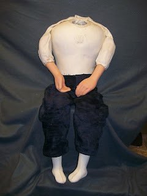

Knee Pal Body For Sale
12/6/2010
{kind=link}

From my storage, here is a little used, (maybe never used - I'm not certain) Knee Pal body, complete. It was built in 1989 (dated inside) and is in near new condition. I repainted the hands.
This is the more traditional body that Craig Lovik used on the majority of his figures with the molded rigid latex torso, hands, and feet.
The neck opening is designed for the base of the head's neck to rest UPON the opening. I will line the opening with leather for smoother, quieter turning before shipping.
The pants are stapled in place in the rear, another Lovik feature of that period. They can be removed and I will do that for the buyer upon request. Otherwise, I will leave them in place.
I'm determined to clear my storage inventory of vent odds and ends through 2011/12, God willing, of course. So I'm getting a head start (if you haven't already noticed) and here's one more very useful item that's got to go! For sale through eBay auction now, (with additional photos). Click Here